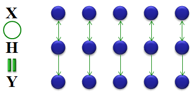
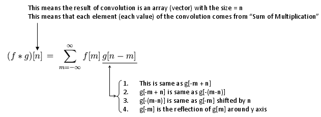
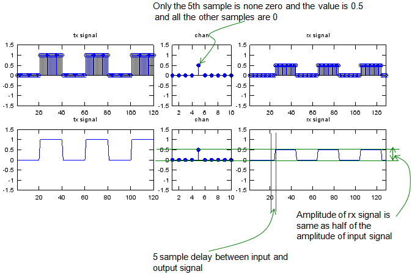
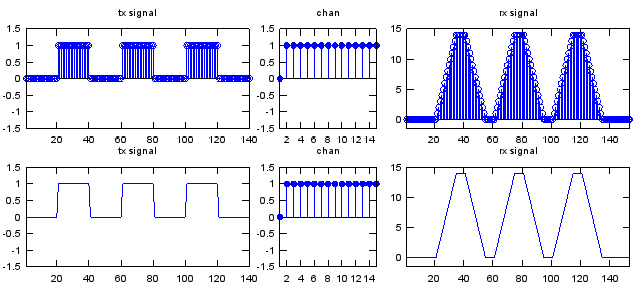

|
Communication - Convolution Home : www.sharetechnote.com |
|
As you know, a most typical approach to almost any of the engineering field is to draw out a mathematical model for each component of a system and combine all of the mathematical components to describe the whole system.
Let's assume that we built a mathematical model for each compoenent of a communication system as shown below. As you see, we have a mathematical model named as X which is the model for the signal from a transmitter. and we have another mathematical model named as Y which is for Recieved signal. and we have the model H which is for the channel. As I described above, we have the mathematical model for each component of the system. Now the question is how do we combine these componend model to make it for the whole system ?
Partly by intuition and partly by our common sense, we would guess that 'combining X and Y in some format' should produce Y. Then the next question is 'How to combine X and Y' ? The first guess would be to try with basic operators like +,-,x,/. Let's think about basic property of these operation. My personal image of these operators are as shown below. Can you make any sense out of this ? Probably no. What I am trying to say with this illustration is "one lement of Y is created by only one element of X and only one element of H". Basically they are one to one operation. It means that a specific elements in Y is only influenced by only one specific elements in H and Y.

According to research and experiments, the received signal is not calculated by this kind of one-to-one operation as described above. In reality, one element in X is influenced by many other elements in X and Y. If I express this in an illustration, it would be as shown below.
You might not haven't seen this kind of operation in high school math, but this kind of operation is very common to various engineering field and this would give you a lot of hard time at entering the university level engineering because you have never been familiar with this kind of operation in high school math.
The most commonly used operator which is operating like this is 'Convolution'. The convolution can be described as shown below. The symbol '*' represents 'Convolution'. (Don't get confused with multiplication symbol that you use in your computer software). For further detailed description of Convolution, refer to Convolution section of Engineering Math.

Convolution is a mathematical operator which gives the result when a sequence of a data goes through a specific process. Basically each elements of an output sequence is influenced by many previous element of input sequence and all the elements within the process the signal is going through. At the beginning, this would be very confusing cocept and just any of single explanation and lecture would never give you complete understanding for it. I am pretty sure that my explanation here would not give you the complete understanding if this is the first time for you to hear about 'Convolution', but if you have gone through many other resources before, i am pretty sure that my explanation would give you some additional insight and clarification. I stronly recomment you to try googling 'Convolution' and it would give you a lot of explanation with a little bit different aspects. You would find some Java applets or animation showing the concept of Counvolution. Even in YouTube, you would get a lot of lectures about Convolution. Try all those materials as much as possible.
Even though you have understandings of Convolution in mathematical sense, you would not have your own intuitive understandings of the concept without a lot of practice. Unlike the simple mathemtical operators like +,-,x,/ it would be very difficult to do practice about Convolution just by pen and paper since the calulation process is so complicated.
To help you with the practice, I would give you a short Matlab/Octave script. Try changing the vector x and chann and see how the outcome changes. Try to make your own association (relation) between input(x), chann and output(y).
Identity
x = [0 1 0 1 0 1]; % Change this array if you want to change input sequence (transmitted data)
sf = 20; % samples per bit p_x = x;
if sf > 1 for i = 2:sf p_x= [p_x ; x]; end
p_x = reshape(p_x,[],1); end
chan = [0 0 0 0 1 0 0 0 0 0]; % Change this array if you want to change the characteristics of channel
y = conv(p_x,chan);
subplot(2,5,[1 2]);stem(p_x);axis([1 length(p_x) -1.5 1.5]);title("tx signal"); subplot(2,5,3);stem(chan,'MarkerFaceColor',[0 0 1]);axis([1 length(chan) -1.5 1.5]);title("chan"); subplot(2,5,[4 5]);stem(y);axis([1 length(y) -1.5 1.5]);title("rx signal"); subplot(2,5,[6 7]);plot(p_x);axis([1 length(p_x) -1.5 1.5]);title("tx signal"); subplot(2,5,8);stem(chan,'MarkerFaceColor',[0 0 1]);axis([1 length(chan) -1.5 1.5]);title("chan"); subplot(2,5,[9 10]);plot(y);axis([1 length(y) -1.5 1.5]);title("rx signal");
Now let's look at the first example. The input (tx signal) is a typtical rectangular pulse that you see in various electrical engineering books. The channel has 10 elements in it and only the first item is nonzero value 1 and all the other elements are set as '0'. Here the channel is a process which is manipulating the input sequence. Look at the output. The output(rx signal) is the result of convolution of input(tx signal) and chan. You see there is no difference at all between the input and output. It means the channel in this example is just passing through the input sequence without any modification.
Scaling
Now let's look at another example. The input (tx signal) is a typtical rectangular pulse that you see in various electrical engineering books. The channel has 10 elements in it and only the first item is nonzero value 0.5 and all the other elements are set as '0'. Here the channel is a process which is manipulating the input sequence. Look at the output. The output(rx signal) is the result of convolution of input(tx signal) and chan. You see there is no difference in terms of overall shape but the amplitude of output is half (0.5 times) of the input signal.
Shifting
Let's look at another example. The input (tx signal) is a typtical rectangular pulse that you see in various electrical engineering books. The channel has 10 elements in it and only the fifth is nonzero value 1 and all the other elements are set as '0'. This channel is almost same as the first example. The only difference is that the position for the non-zero value appears. Look at the output. The output(rx signal) is the result of convolution of input(tx signal) and chan. You see there is almost no difference between the input and output and the only difference is that there is some delay between the input and output. It means the channel in this example is just delaying the input sequence without changing anything in terms of amplitude.
Scaling and Shifting
Let's look at another example. The input (tx signal) is a typtical rectangular pulse that you see in various electrical engineering books. The channel has 10 elements in it and only the fifth is nonzero value 0.5 and all the other elements are set as '0'. This channel is almost same as the first example. The only difference is that the position for the non-zero value appears. Look at the output. The output(rx signal) is the result of convolution of input(tx signal) and chan. Now you see two differences between the input and output. You would notice that both delay and amplitude has been changed. It means the channel in this example is just delaying the input sequence and changing the amplitude as well.

Reflection (Echo)
x = [0 1 0 0 0 1 0 0 0];
sf = 20; % samples per bit p_x = x;
if sf > 1 for i = 2:sf p_x= [p_x ; x]; end
p_x = reshape(p_x,[],1); end
chan = zeros(40,1); chan(1) = 1; chan(30) = 0.5;
y = conv(p_x,chan);
subplot(2,5,[1 2]);stem(p_x);axis([1 length(p_x) -1.5 1.5]);title("tx signal"); subplot(2,5,3);stem(chan,'MarkerFaceColor',[0 0 1]);axis([1 length(chan) -1.5 1.5]);title("chan"); subplot(2,5,[4 5]);stem(y);axis([1 length(y) -1.5 1.5]);title("rx signal"); subplot(2,5,[6 7]);plot(p_x);axis([1 length(p_x) -1.5 1.5]);title("tx signal"); subplot(2,5,8);stem(chan,'MarkerFaceColor',[0 0 1]);axis([1 length(chan) -1.5 1.5]);title("chan"); subplot(2,5,[9 10]);plot(y);axis([1 length(y) -1.5 1.5]);title("rx signal");
Differentiator
x = [0 1 0 1 0 1 0];
sf = 20; % samples per bit p_x = x;
if sf > 1 for i = 2:sf p_x= [p_x ; x]; end
p_x = reshape(p_x,[],1); end
chan = [0 1 -1 0 0 0 0 0 0 0];
y = conv(p_x,chan);
subplot(2,5,[1 2]);stem(p_x);axis([1 length(p_x) -1.5 1.5]);title("tx signal"); subplot(2,5,3);stem(chan,'MarkerFaceColor',[0 0 1]);axis([1 length(chan) -1.5 1.5]);title("chan"); subplot(2,5,[4 5]);stem(y);axis([1 length(y) -1.5 15]);title("rx signal"); subplot(2,5,[6 7]);plot(p_x);axis([1 length(p_x) -1.5 1.5]);title("tx signal"); subplot(2,5,8);stem(chan,'MarkerFaceColor',[0 0 1]);axis([1 length(chan) -1.5 1.5]);title("chan"); subplot(2,5,[9 10]);plot(y);axis([1 length(y) -1.5 15]);title("rx signal");
Integrator
x = [0 1 0 1 0 1 0];
sf = 20; % samples per bit p_x = x;
if sf > 1 for i = 2:sf p_x= [p_x ; x]; end
p_x = reshape(p_x,[],1); end
chan = [0 1 1 1 1 1 1 1 1 1 1 1 1 1 1];
y = conv(p_x,chan);
subplot(2,5,[1 2]);stem(p_x);axis([1 length(p_x) -1.5 1.5]);title("tx signal"); subplot(2,5,3);stem(chan,'MarkerFaceColor',[0 0 1]);axis([1 length(chan) -1.5 1.5]);title("chan"); subplot(2,5,[4 5]);stem(y);axis([1 length(y) -1.5 15]);title("rx signal"); subplot(2,5,[6 7]);plot(p_x);axis([1 length(p_x) -1.5 1.5]);title("tx signal"); subplot(2,5,8);stem(chan,'MarkerFaceColor',[0 0 1]);axis([1 length(chan) -1.5 1.5]);title("chan"); subplot(2,5,[9 10]);plot(y);axis([1 length(y) -1.5 15]);title("rx signal");

Exponential Decaying
There would be no real system (no real channel) which is simple as simple as described above, but the example shown above would be a good example to help you understand very basic properties of Convolution.
Now I will give you some examples with a little bit more complicated channels.
x = [0 1 0 1 0 1]; % Change this array if you want to change input sequence (transmitted data)
sf = 20; % samples per bit p_x = x;
if sf > 1 for i = 2:sf p_x= [p_x ; x]; end
p_x = reshape(p_x,[],1); end
a = 0.5; t = 0:10; k = 0.3; chan = 0.5*exp(-k*t); % Try applying different functions here. chan = [[0 0 0 0 0] chan]; % Change this array if you want to change the characteristics of channel chan = chan/sum(chan);
y = conv(p_x,chan);
subplot(2,5,[1 2]);stem(p_x);axis([1 length(p_x) -1.5 1.5]);title("tx signal"); subplot(2,5,3);stem(chan,'MarkerFaceColor',[0 0 1]);axis([1 length(chan) -0.5 0.5]);title("chan"); subplot(2,5,[4 5]);stem(y);axis([1 length(y) -1.5 1.5]);title("rx signal"); subplot(2,5,[6 7]);plot(p_x);axis([1 length(p_x) -1.5 1.5]);title("tx signal"); subplot(2,5,8);stem(chan,'MarkerFaceColor',[0 0 1]);axis([1 length(chan) -0.5 0.5]);title("chan"); subplot(2,5,[9 10]);plot(y);axis([1 length(y) -1.5 1.5]);title("rx signal");
One simple example is as follows. As you see, the input is the same as the ones we used in previous examples. You would notice that the values in channel is much more complex than the ones we saw in previous examples. And the result is as shown below. If you already have gone through any basic electronic course, you would notice that the output is very similar to the case where a rectangular pulse is going through a capacitance circuit.
Let me give you another example. As you see, the input is the same as the ones we used in previous examples. You would notice that the values in channel is similar to previous example and the only difference is that you have some zeros at the beginning of channel sequence. And the result is as shown below. You see the overal shape of the output (rx signal) is same as the one you saw in previous example, but you would notice that a delay was introduced in this example.
Now I will give you even more complex examples. The Matlab/Octave code for these examples are listed below.
x = [0 1 0 1 0 1]; % Change this array if you want to change input sequence (transmitted data)
sf = 20; % samples per bit p_x = x;
if sf > 1 for i = 2:sf p_x= [p_x ; x]; end
p_x = reshape(p_x,[],1); end
a = 0.5; t = 0:10; k = 0.3; chan = 0.5*exp(-k*t).*cos(pi*t); % Try applying different functions here. chan = [0 0 0 0 0 chan]; % Change this array if you want to change the characteristics of channel chan = chan/chan(6);
y = conv(p_x,chan);
subplot(2,5,[1 2]);stem(p_x);axis([1 length(p_x) -1.5 1.5]);title("tx signal"); subplot(2,5,3);stem(chan,'MarkerFaceColor',[0 0 1]);axis([1 length(chan) -1.5 1.5]);title("chan"); subplot(2,5,[4 5]);stem(y);axis([1 length(y) -1.5 1.5]);title("rx signal"); subplot(2,5,[6 7]);plot(p_x);axis([1 length(p_x) -1.5 1.5]);title("tx signal"); subplot(2,5,8);stem(chan,'MarkerFaceColor',[0 0 1]);axis([1 length(chan) -1.5 1.5]);title("chan"); subplot(2,5,[9 10]);plot(y);axis([1 length(y) -1.5 1.5]);title("rx signal");
Let me give you an example. As you see, the input is the same as the ones we used in previous examples. You would notice that the values in channel is similar to previous example and the difference is that we have both positive and negative values alternating each ofther in channel sequence. And the result is as shown below. You see the ringing both at rising and falling phase. This is a very similar case where a signal is going through a L-C circuit or typical transmission lines.
Let me give you another example. As you see, the input is the same as the ones we used in previous examples. You would notice that the values in channel is similar to previous example and the only difference is that you have some zeros at the beginning of channel sequence. And the result is as shown below. You see the overal shape of the output (rx signal) is same as the one you saw in previous example, but you would notice that a delay was introduced in this example.
Some Funs with Sinosodial Signal and Convolution
SamplesPerCycle = 20;
x = 0:2*pi/SamplesPerCycle:10*pi; p_x = sin(x);
chan = zeros(1,2*SamplesPerCycle); chan(1) = 1; chan(SamplesPerCycle/2+1) = 0.5;
y = conv(p_x,chan);
subplot(2,5,[1 2]);stem(p_x);axis([1 length(p_x) -1.5 1.5]);title("tx signal"); subplot(2,5,3);stem(chan,'MarkerFaceColor',[0 0 1]);axis([1 length(chan) -1.5 1.5]);title("chan"); subplot(2,5,[4 5]);stem(y);xlim([1 length(y)]);title("rx signal"); subplot(2,5,[6 7]);plot(p_x);axis([1 length(p_x) -1.5 1.5]);title("tx signal"); subplot(2,5,8);stem(chan,'MarkerFaceColor',[0 0 1]);axis([1 length(chan) -1.5 1.5]);title("chan"); subplot(2,5,[9 10]);plot(y);xlim([1 length(y)]);title("rx signal");
|